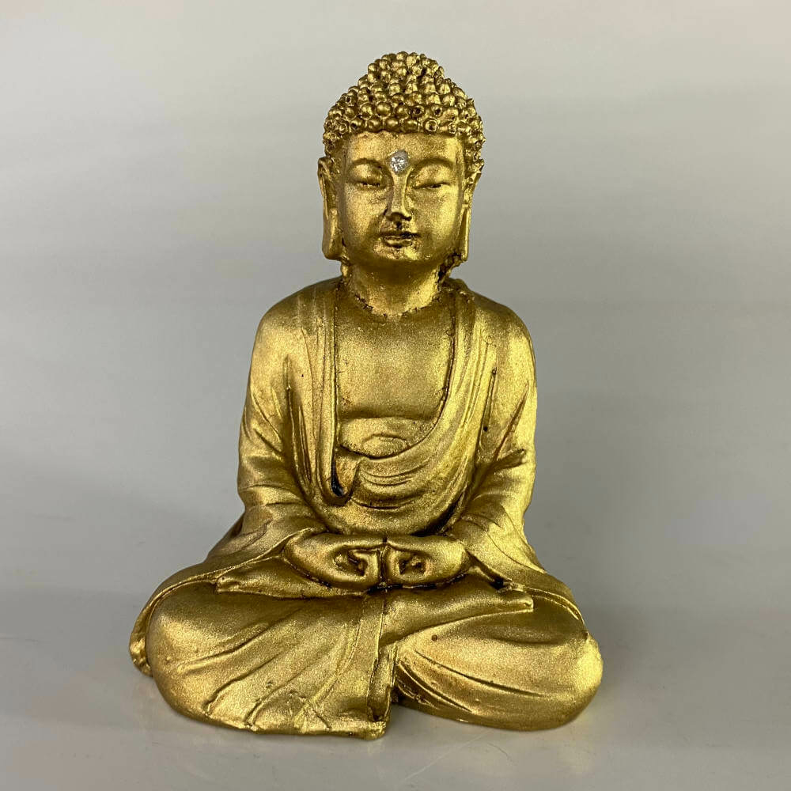

Creencias de Tailandia
El budismo Theravāda es la religión predominante en Tailandia, practicada por aproximadamente el 95% de la población. Esta rama del budismo, originada en Sri Lanka, enfatiza la disciplina monástica y las enseñanzas originales de Buda, centradas en el karma y la reencarnación.
Los monjes budistas son figuras centrales en la sociedad tailandesa. Desde jóvenes, los novicios reciben educación en escritura y textos budistas, y a los 20 años pueden ordenarse como monjes, liderando ceremonias y transmitiendo enseñanzas.
El karma es un concepto clave: las buenas acciones llevan a resultados positivos, mientras que las malas generan consecuencias negativas. Esta creencia guía el comportamiento ético y la búsqueda de méritos para una mejor reencarnación.
Además del budismo, las creencias animistas están muy presentes. Los tailandeses creen en espíritus que habitan en la naturaleza, como árboles y ríos, y realizan ofrendas en pequeños altares llamados "casas de espíritus" para mantener la armonía.
El islam es la segunda religión más practicada, con un 4% de la población, principalmente en el sur del país. También hay minorías de cristianos, hindúes y taoístas, y la constitución tailandesa garantiza la libertad religiosa.
El respeto a los antepasados es una práctica espiritual esencial. Las familias realizan ceremonias para honrar a los fallecidos, creyendo que sus espíritus influyen en la vida diaria.
Existen tabúes culturales, como no tocar la cabeza de una persona (considerada sagrada) o señalar con los pies (la parte más impura del cuerpo). Estas normas reflejan la importancia de la etiqueta en la vida espiritual y social.
La tolerancia religiosa permite que diferentes creencias coexistan pacíficamente, aunque el gobierno regula el número de misioneros extranjeros. En general, las prácticas religiosas refuerzan la identidad cultural tailandesa.
